Hidden Inventory Arc

The Gojo's Past Arc is the fifth arc in Gege Akutami's Jujutsu Kaisen. In the anime adaptation, the arc is referred as Hidden Inventory / Premature Death Arc. It follows Satoru Gojo and Suguru Geto during the year 2006, when they were second-year students at Tokyo Jujutsu High. During the arc, they are assigned to escort the Star Plasma Vessel to Master Tengen as curse user groups conspire against them.
Cursed Child Arc
The Cursed Child Arc is the zeroth story arc which covers Gege Akutami's Jujutsu Kaisen 0: Jujutsu High prequel series. It follows Yuta Okkotsu as he enrolls in Tokyo Jujutsu High and seeks to unravel the curse on his childhood friend, Rika Orimoto.
Fearsome Womb Arc
The Fearsome Womb Arc is the first story arc in Gege Akutami's Jujutsu Kaisen. It follows Yuji Itadori as he's thrust into the jujutsu world after becoming Sukuna's vessel.
Vs. Mahito Arc
The Vs. Mahito Arc follows Yuji and grade 1 sorcerer, Kento Nanami as they investigate Mahito's trail of transfigured human corpses. Mahito involves a disheartened young man named Junpei Yoshino, leading him down a dark path.
Shibuya Incident Arc

The Shibuya Incident Arc follows the entirety of the Shibuya Incident on October 31, 2018. The alliance between cursed spirits and curse users forged by Mahito and Pseudo-Geto finally makes their move to seal Satoru Gojo.
Itadori's Extermination Arc
The Itadori's Extermination Arc follows the immediate aftermath of the Shibuya Incident where Yuji Itadori's execution has been reinstated by the higher-ups. Without the protection of Satoru Gojo, Yuji is targeted by Gojo's former student Yuta Okkotsu, and his extermination is seemingly all but assured.
Perfect Preparation Arc
 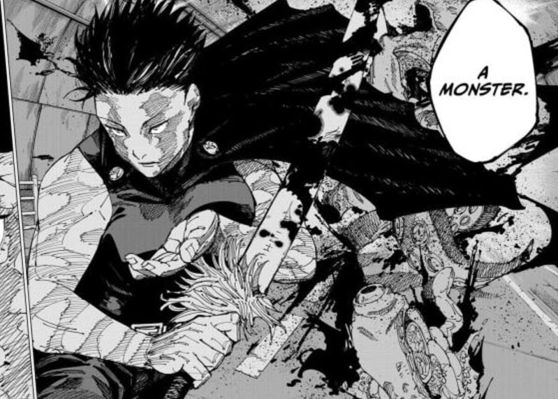
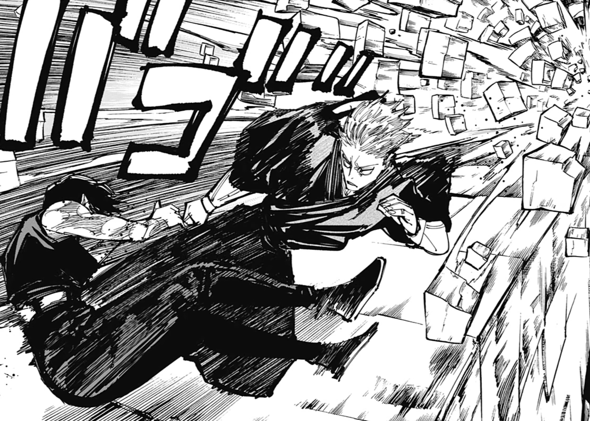
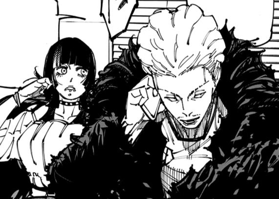
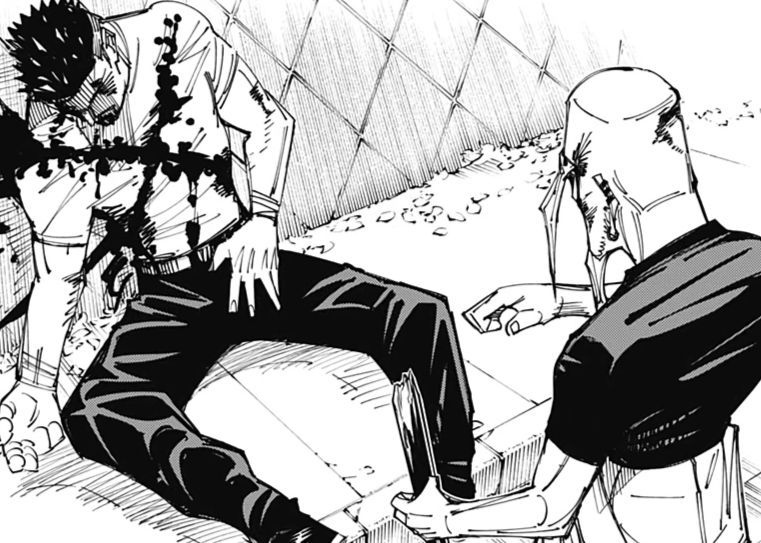
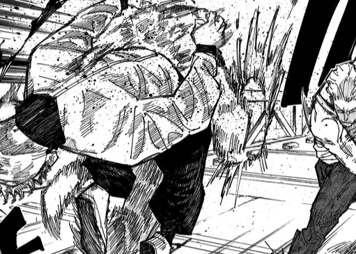
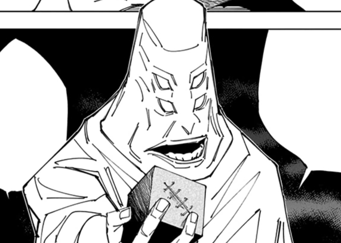
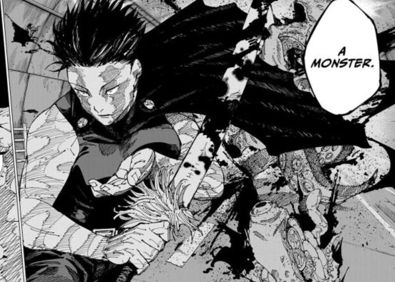
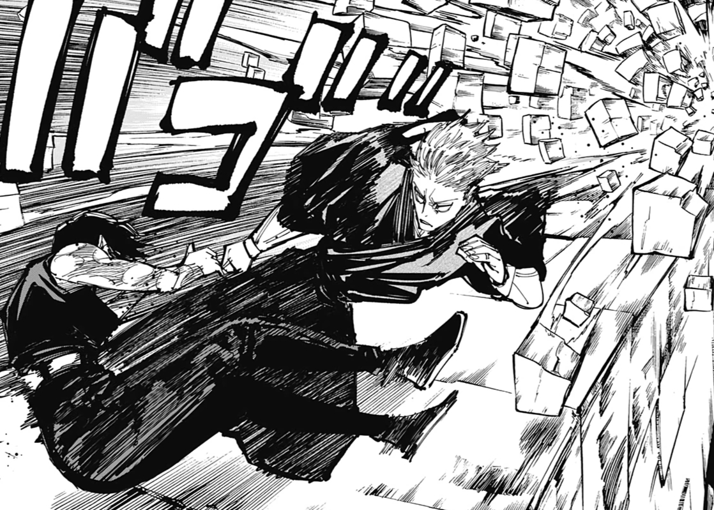
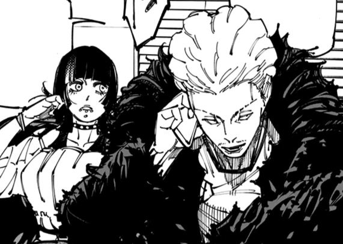
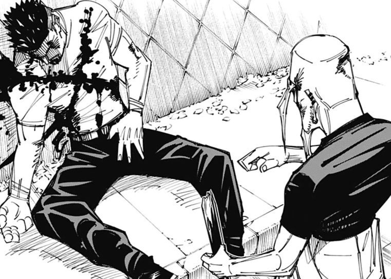
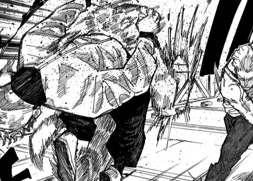
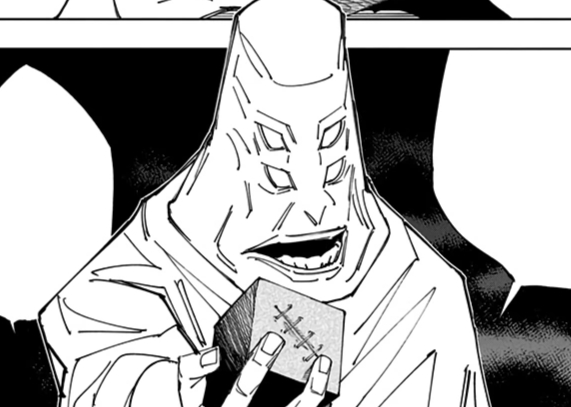
The Perfect Preparation Arc follows the Tokyo Jujutsu High students and their allies as they continue to deal with the fallout from the Shibuya Incident on top of preparing for Kenjaku's next great act of jujutsu terrorism: the Culling Game.
Culling Game Arc
 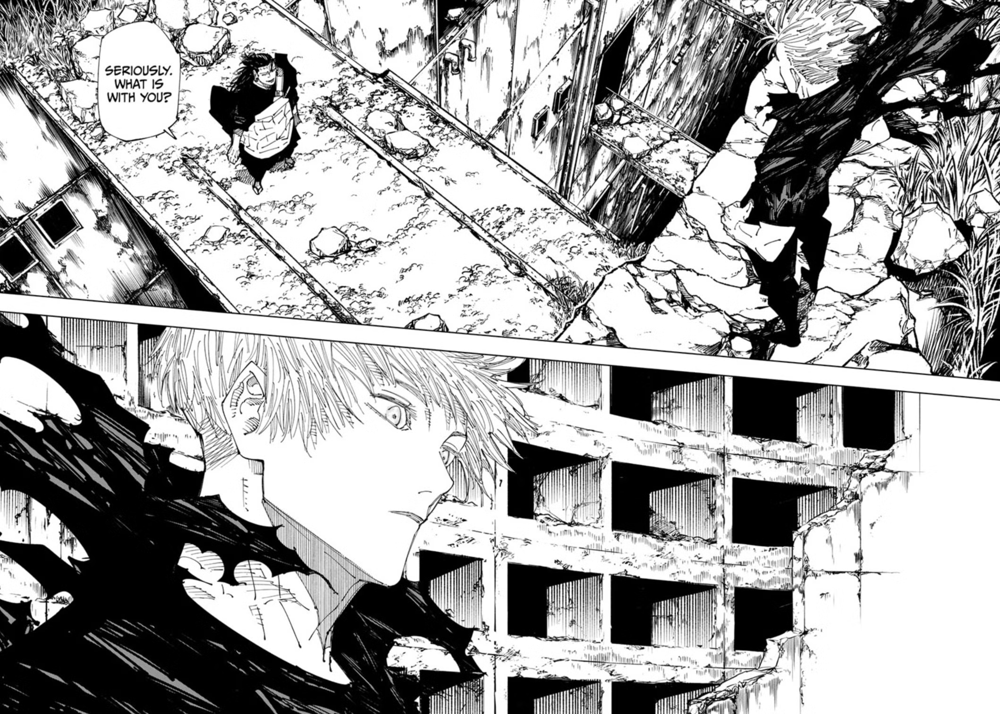
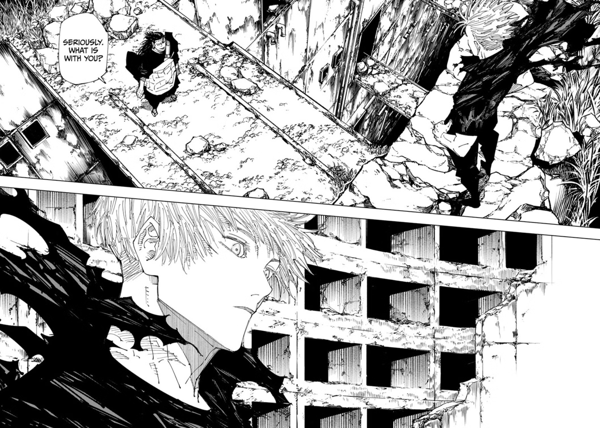
The Culling Games Arc follows Yuji Itadori, Megumi Fushiguro, and their allies as they enter the Culling Game with the intention of rescuing Tsumiki Fushiguro from participating, freeing Satoru Gojo from Prison Realm, and protecting Tengen from Kenjaku.
Shinjuku Showdown Arc

 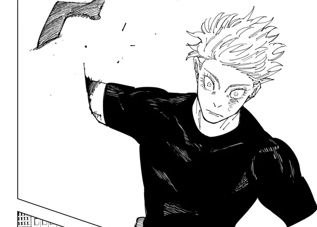
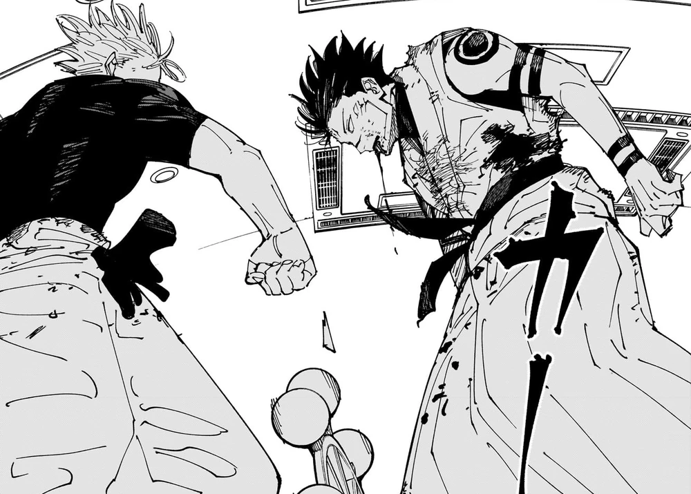
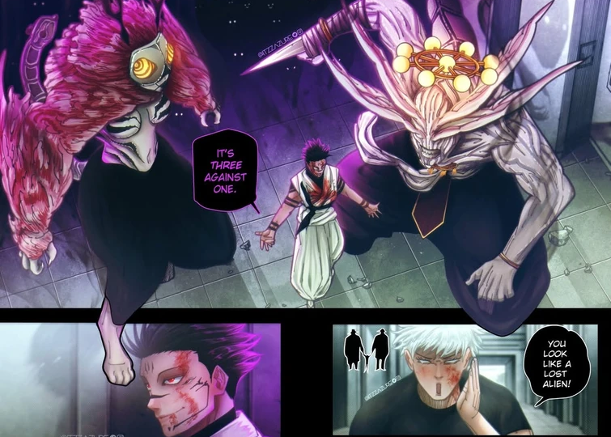
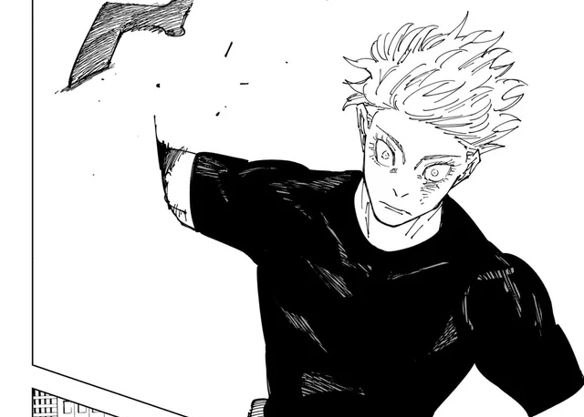
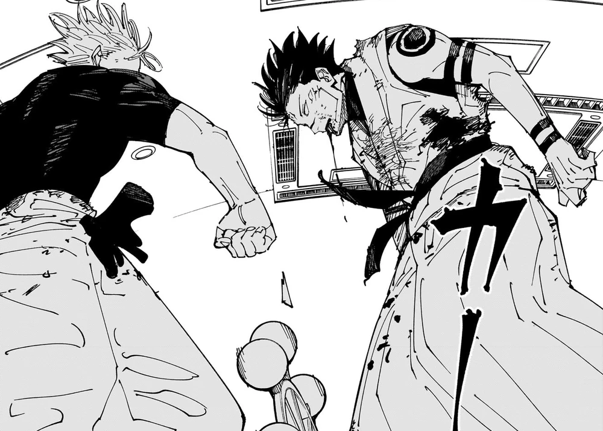
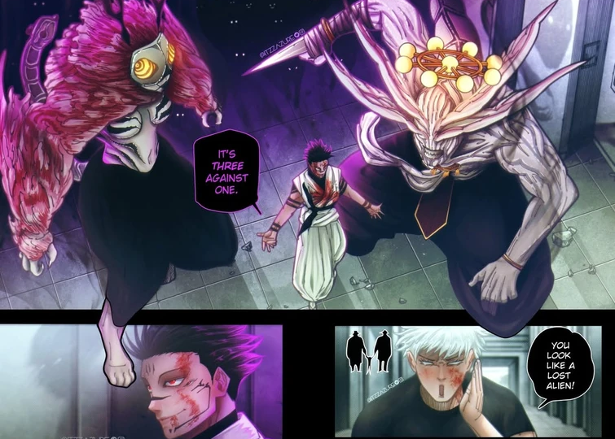

The Shinjuku Showdown Arc follows the last climatic clash between the jujutsu sorcerers and the King of Curses, Ryomen Sukuna.